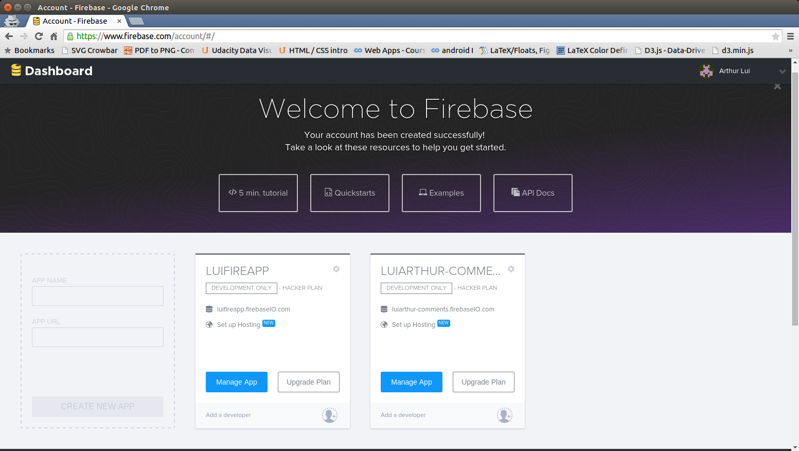
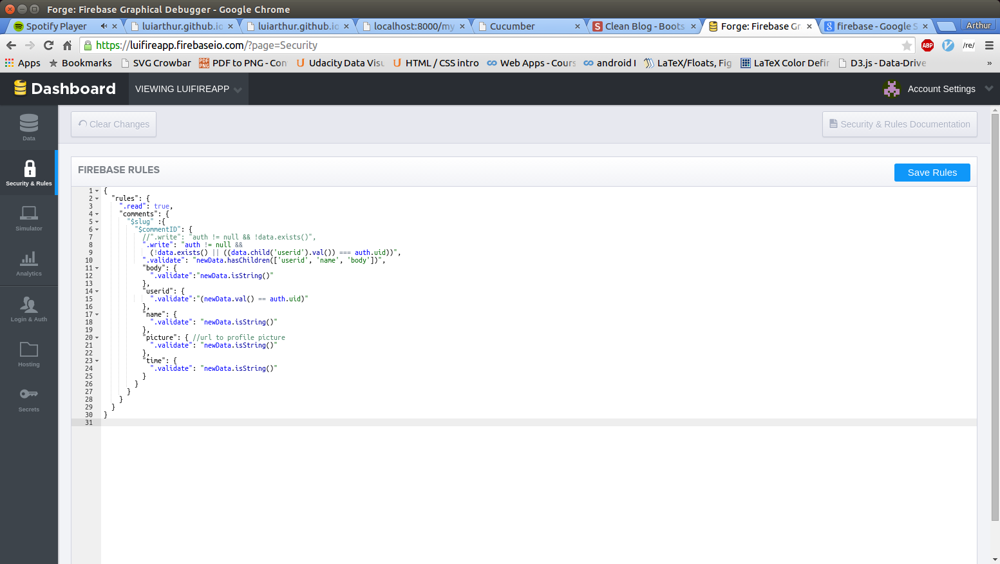
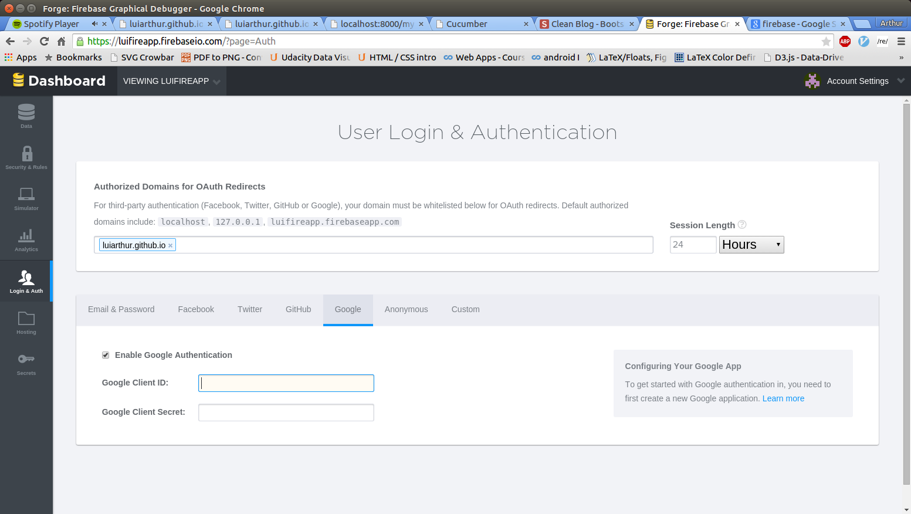

Cucumber is a minimalist commenting system. It is still in the works... As of today (27 May, 2015), users can login via Facebook, Google, or Github, and leave, edit and remove comments. It's open source so you can modify features as needed. Cucumber uses Firebase to store data. For users who have not used Firebase before, I have posted a tutorial to teach you how to set up your own cucumber-firebase commenting system. Eventually, I would love to add inline commenting, like, flag, reply, notification, as well as image / video posting capabilities.
While there are other (more developed) commenting systems like Disqus, I wanted something more minimalist and malleable. I also feel that users should be able to comment using the common social media apps already existing.
Feel free to leave me a comment...
Tutorial
To use cucumber, you will first need (1) a Firebase account, and (2) Facebook / Google / Github apps. Then, all you need to do is reference the relevant javascript and css files. I will walk you through the set-up of the firebase account and google app, and direct you to a github repository for a simple demo.
Firebase Account
If you don't already have one, you should first set up a firebase account. Firebase is a realtime database that allows users to easily authenticate through Facebook, Google, Github, Twitter, or email and password.

Firebase App
Next, you should create a firebase app. It is as simple as setting up an email account. Just go to your firebase account and look for this page:
Then in the "CREATE NEW APP" box, and under App Names, type a name for your app (e.g. 'mycucumberapp'). The App URL will be automatically filled in for you.
Firebase Rules
Firebase rules protect users data from other users. For example, by specifying a set of rules, you can allow authenticated users to write comments, and edit their own comments, and prevent users from editing other users' comments. The set of rules I used are:
To add rules, just navigate to "Security and Rules" tab, on your app, and paste the rules. My rules allow the world to view comments, but only authenticated users can write comments. Furthermore, you can only edit and remove your own comments.
Login & Authentication
Next, go to the "Login & Authentication" tab. To add Cucumber to your site, you will need to enter your website's URL. Just the homepage will do. At the bottom of the page, go through each of the tabs and enable the services you want. The screen below is what your page should look like for enabling Google authentication.
Google App
Last of all, to fill out the Google Client ID and Secret, you simply click on 'Learn more' and follow the instructions under 'Configuring Your Application. The configuration should take no more than 5 minutes. It's a short section but each step is important.
Adding Cucumber Code
Finally, all that is left to do is to put the right chunks of code in the right places. Refer to the demo on my Github. And in '/js/cucumber.js', change 'luifireapp' to whatever you named your firebase app to be. Otherwise, your comments won't be showing up on your firebase app, but on mine... And I will delete them!